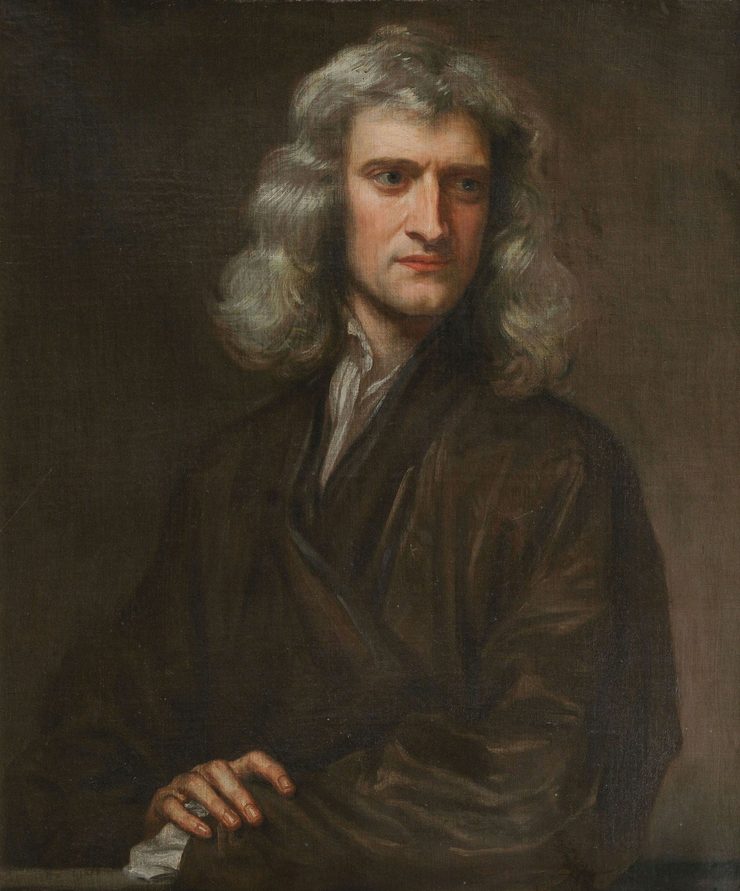
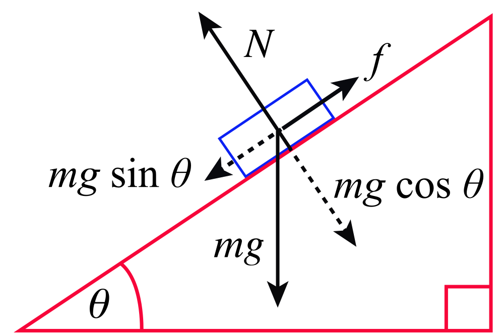
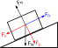
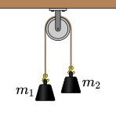
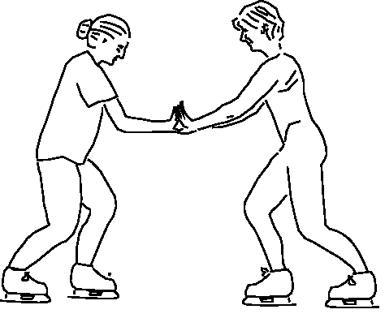
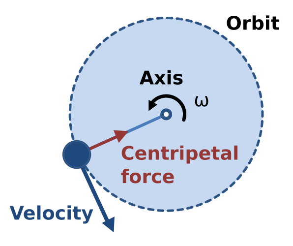
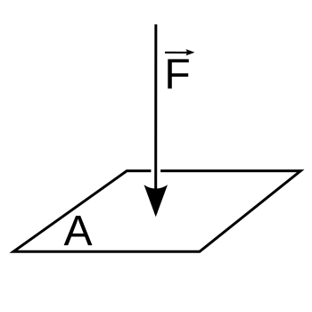

1. Peta materi
Dinamika adalah bagian dari mekanika yang mempelajari hubungan antara gaya dan gerak. Materi ini disusun dari konsep paling dasar menuju penerapan yang semakin kompleks.
KINEMATIKA
posisi, perpindahan, kecepatan, percepatan
-> tanpa membahas penyebab gerak
|
Pertanyaan: mengapa benda dipercepat?
|
DINAMIKA
|
GAYA sebagai besaran vektor
|
RESULTAN GAYA
|
PERCEPATAN
|
Hukum Newton pada berbagai konfigurasi
|
bidang datar -> bidang miring -> gesekan
|
tegangan tali -> katrol -> Atwood
|
gravitasi -> hambatan udara -> gaya angkat
|
gerak melingkar -> gaya sentripetal
|
TEKANAN sebagai P = F/AHubungan terpenting yang menjadi titik awal seluruh materi ini adalah Hukum II Newton, yaitu resultan gaya sama dengan massa dikali percepatan.
sum F = m a
Maknanya:
resultan gaya -> perubahan gerak
massa -> besar inersia
percepatan -> perubahan kecepatanKalau gaya-gaya yang bekerja pada sebuah benda diketahui, kita dapat menentukan bagaimana geraknya berubah. Sebaliknya, kalau perubahan gerak diketahui, kita dapat menebak resultan gaya yang menyebabkan perubahan tersebut.
2. Tujuan pembelajaran
Setelah mengikuti sesi ini, mahasiswa mampu menjelaskan hubungan antara gaya dan gerak, mengidentifikasi jenis-jenis gaya, menyusun diagram gaya bebas, menerapkan Hukum Newton pada bidang datar dan bidang miring, menghitung resultan gaya dan tegangan tali, serta menganalisis gerak melingkar dan tekanan.
| Tujuan | Indikator pemahaman |
|---|---|
| Menjelaskan pengertian gaya | Menyebutkan satuan SI gaya dan sifatnya sebagai besaran vektor |
| Membedakan jenis gaya | Mengelompokkan gaya kontak dan gaya jarak jauh beserta contohnya |
| Menghitung resultan gaya | Menjumlahkan gaya secara vektor dan menentukan arahnya |
| Memahami inersia dan massa | Menjelaskan hubungan massa dengan kecenderungan mempertahankan keadaan gerak |
| Menerapkan Hukum Newton | Menyusun persamaan resultan gaya untuk setiap sumbu |
| Menyusun diagram gaya bebas | Menggambar hanya gaya eksternal pada benda yang dianalisis |
| Menganalisis bidang miring | Menghitung percepatan pada bidang licin dan bidang dengan gesekan |
| Menganalisis tegangan tali | Menyelesaikan sistem dua benda, katrol, dan pesawat Atwood |
| Memahami hukum gravitasi | Menghubungkan gaya gravitasi, berat, dan percepatan jatuh bebas |
| Menganalisis gerak melingkar | Menghitung percepatan dan gaya sentripetal beserta batas traksi |
| Memahami tekanan | Menghubungkan gaya, luas, dan tekanan pada benda maupun fluida |
3. Kinematika dan dinamika
Mekanika terbagi menjadi dua bagian utama. Kinematika mempelajari gerak tanpa membahas penyebab gerak. Dinamika mempelajari penyebab perubahan gerak.
Ketika kita mengamati sebuah mobil bergerak, ada dua pertanyaan yang berbeda. Kinematika menanyakan posisi, kecepatan, dan percepatan mobil. Dinamika menanyakan apa yang menyebabkan mobil mengalami percepatan, apa yang membuat mobil berhenti, dan mengapa mobil dapat berbelok.
Kinematika dapat memberi tahu bahwa sebuah mobil mengalami percepatan tiga meter per detik kuadrat, tetapi belum menjelaskan mengapa percepatan tersebut terjadi. Persoalan itu menjadi tugas dinamika.
4. Pengertian gaya
Gaya adalah interaksi yang dapat menyebabkan perubahan keadaan gerak suatu benda atau menyebabkan perubahan bentuk benda. Dalam bahasa sehari-hari, gaya dapat dipahami sebagai tarikan atau dorongan.
Contoh interaksi yang menghasilkan gaya:
| Interaksi | Gaya yang muncul |
|---|---|
| Mendorong meja | Gaya dorong dari tangan pada meja |
| Menarik pintu | Gaya tarik dari tangan pada pintu |
| Berjalan di tanah | Gaya gravitasi Bumi pada tubuh manusia |
| Berjalan di lantai | Gaya normal lantai ke atas pada kaki |
| Menarik benda dengan tali | Gaya tarik tali pada benda |
Satuan SI gaya adalah newton, ditulis dengan huruf N. Satu newton adalah gaya yang diperlukan untuk memberikan percepatan satu meter per detik kuadrat kepada massa satu kilogram.
5. Gaya sebagai besaran vektor
Gaya bukan hanya memiliki nilai, tetapi juga memiliki arah. Menulis gaya lima puluh newton tanpa keterangan arah belum memberikan informasi lengkap.
Gaya 50 N arah kanan -> -> -> -> ->
Gaya 50 N arah kiri -<- <- <- <- <-
Keduanya punya besar sama,
tetapi hasil penjumlahannya berbeda.Karena memiliki besar dan arah, gaya merupakan besaran vektor. Hal ini penting karena dua gaya yang memiliki besar sama belum tentu menghasilkan resultan yang sama.
Contoh A
10 N -> + 5 N ->
resultan = 15 N ->
Contoh B
10 N -> + 5 N <-
resultan = 5 N ->6. Gaya kontak dan gaya jarak jauh
Salah satu cara mengelompokkan gaya adalah berdasarkan apakah benda harus bersentuhan untuk berinteraksi.
| Aspek | Gaya kontak | Gaya jarak jauh |
|---|---|---|
| Syarat | Harus ada sentuhan | Tidak perlu sentuhan |
| Contoh | Gaya normal, gaya gesek, gaya tegangan, gaya dorong | Gaya gravitasi |
| Bergantung pada keadaan | Pada kondisi permukaan kontak | Pada posisi relatif kedua benda |
Gaya normal adalah gaya dari permukaan yang tegak lurus permukaan. Gaya gesek muncul akibat interaksi permukaan. Gaya tegangan adalah gaya dari tali. Gaya dorong atau tarik diberikan langsung oleh manusia atau benda lain.
Gaya gravitasi bekerja pada jarak tertentu dan selalu bersifat tarik-menarik. Bumi dapat menarik sebuah benda meskipun benda tersebut tidak menyentuh Bumi.
7. Resultan gaya
Sebuah benda jarang hanya mendapatkan satu gaya. Misalnya sebuah kotak didorong ke kanan, sementara gesekan bekerja ke kiri.
F dorong ->
[KOTAK]
f gesek <-
Yang menentukan percepatan bukan salah satu
gaya secara terpisah, melainkan jumlah vektor
seluruh gaya.Jika gaya dorong sebesar dua puluh newton bekerja ke kanan dan gaya gesek sebesar delapan newton bekerja ke kiri, maka:
8. Kesetimbangan dan resultan gaya nol
Jika resultan gaya sama dengan nol, maka percepatan juga sama dengan nol.
Namun percepatan nol tidak selalu berarti benda diam. Ada dua kemungkinan. Pertama, benda dalam keadaan diam dengan kecepatan nol, sehingga benda akan tetap diam. Kedua, benda sedang bergerak dengan kecepatan konstan, sehingga benda akan terus bergerak lurus dengan kecepatan konstan.
Kaidah penting dari bagian ini adalah bahwa tidak adanya percepatan tidak berarti tidak ada gaya. Yang berarti adalah resultan gaya sama dengan nol. Buku yang diletakkan di atas meja mengalami gaya berat ke bawah dan gaya normal ke atas. Kedua gaya ada, tetapi nilainya sama sehingga saling meniadakan.
Buku di atas meja
N (gaya normal, ke atas)
|
[BUKU]
|
v
W (gaya berat, ke bawah)
Sumbu y ke atas:
Sum F_y = N − W = 0
Jika tidak ada gaya vertikal lain, maka N = W9. Massa dan inersia
Inersia atau kelembaman adalah kecenderungan benda untuk mempertahankan keadaan geraknya. Benda yang diam cenderung tetap diam, dan benda yang bergerak cenderung mempertahankan geraknya.
Contohnya ketika bus bergerak lalu berhenti mendadak, tubuh penumpang terasa terdorong ke depan. Tubuh itu sebelumnya bergerak bersama bus dan cenderung mempertahankan keadaan geraknya.
Semakin besar massa, semakin besar inersianya. Mendorong bola sepak relatif mudah, sedangkan mendorong mobil jauh lebih sulit. Bukan karena mobil tidak mau bergerak, melainkan karena perubahan keadaan gerak memerlukan resultan gaya yang lebih besar untuk menghasilkan percepatan yang sama.
Inersia berkaitan langsung dengan massa. Massa merupakan ukuran kuantitatif yang menyatakan kecenderungan benda mempertahankan keadaan geraknya.
10. Massa dan berat
Massa dan berat adalah dua besaran yang berbeda, meskipun keduanya sering dianggap sama dalam percakapan sehari-hari.
| Aspek | Massa | Berat |
|---|---|---|
| Definisi | Jumlah materi penyusun benda | Gaya gravitasi yang bekerja pada benda |
| Lambang | m | W |
| Satuan | Kilogram atau kg | Newton atau N |
| Hubungan | Menentukan inersia | Dihitung dengan W = mg |
| Menjadi nol | Tidak pernah menjadi nol | Dapat mendekati nol di luar pengaruh medan gravitasi |
Jika seseorang memiliki massa enam puluh kilogram dan nilai g sebesar 9,8 meter per detik kuadrat, maka beratnya:
Jadi pernyataan berat saya enam puluh kilogram tidak tepat secara fisis. Enam puluh kilogram adalah massa, sedangkan berat di dekat permukaan Bumi sekitar 588 newton.
11. Hukum I Newton
Hukum I Newton atau hukum kelembaman menyatakan bahwa benda yang diam akan tetap diam, sedangkan benda yang bergerak akan terus bergerak dengan kecepatan konstan dalam garis lurus apabila tidak terdapat resultan gaya eksternal.
Hukum ini berbeda dengan anggapan yang sering muncul dalam kehidupan sehari-hari. Benda yang didorong akhirnya berhenti karena ada gesekan dan hambatan udara, bukan karena benda secara alami memerlukan gaya agar terus bergerak. Tanpa resultan gaya, benda tidak perlu terus didorong untuk mempertahankan kecepatan konstan.

12. Kerangka acuan inersial
Untuk menerapkan Hukum Newton, kita biasanya menggunakan kerangka acuan inersial. Kerangka acuan dapat dianggap sebagai sistem sudut pandang dan koordinat yang digunakan untuk mengukur posisi, kecepatan, dan percepatan.
Kerangka acuan inersial adalah kerangka yang tidak mengalami percepatan translasi, sehingga Hukum Newton dapat digunakan dalam bentuk biasanya. Pendekatan sederhana yang sering dipakai adalah menganggap permukaan Bumi sebagai kerangka inersial untuk banyak persoalan sehari-hari.
Sebaliknya, mobil yang sedang mempercepat atau pengereman merupakan contoh kerangka non-inersial. Pada kerangka non-inersial, pembahasan memerlukan tambahan konsep gaya semu.
| Kerangka | Sifat | Keterangan |
|---|---|---|
| Permukaan Bumi untuk persoalan sehari-hari | Pendekatan inersial | Percepatan translasi terkabaikan untuk persoalan sehari-hari |
| Kereta yang melaju tetap | Inersial | Tidak mengalami percepatan |
| Mobil yang dipercepat | Non-inersial | Memerlukan gaya semu dalam analisis |
| Pesawat mendarat | Non-inersial | Percepatan besar selama pendaratan |
13. Hukum II Newton
Hukum II Newton adalah hukum yang paling banyak dipakai dalam perhitungan dinamika.
Dari persamaan tersebut dapat diturunkan tiga hubungan penting.
| Kondisi | Hubungan | Penjelasan |
|---|---|---|
| Massa tetap | Gaya naik, percepatan naik | Semakin besar gaya, semakin besar percepatan |
| Gaya tetap | Massa naik, percepatan turun | Semakin berat benda, semakin sulit dipercepat |
| Arah percepatan | Percepatan searah resultan gaya | Arah percepatan ditentukan oleh arah resultan gaya |
Contoh perhitungan sederhana. Jika massa benda dua kilogram dan resultan gaya sepuluh newton, maka:
14. Resultan gaya dalam perhitungan
Misalkan benda menerima gaya dua puluh newton ke kanan dan gaya delapan newton ke kiri. Menggunakan nilai dua puluh newton secara langsung akan menghasilkan jawaban yang salah.
Langkah yang benar
1. identifikasi seluruh gaya
2. tentukan arah setiap gaya
3. hitung resultan gaya
4. terapkan Sum F = m aPada contoh tersebut resultan gaya adalah dua puluh dikurangi delapan, yaitu dua belas newton ke kanan. Percepatan kemudian dihitung dari resultan gaya tersebut.
15. Bentuk umum dan momentum
Bentuk yang lebih umum dari Hukum II Newton dinyatakan menggunakan momentum.
Jika massa konstan, maka turunan momentum terhadap waktu sama dengan massa dikali turunan kecepatan terhadap waktu. Karena turunan kecepatan terhadap waktu adalah percepatan, diperoleh:
Perbedaan kedua bentuk ini penting pada soal tumbukan, ketika massa dapat berubah selama peristiwa. Pada konteks materi ini, massa umumnya dianggap konstan sehingga bentuk F = m a sudah memadai.
16. Diagram gaya bebas
Diagram gaya bebas atau free body diagram adalah gambar yang hanya menunjukkan gaya-gaya eksternal yang bekerja pada benda yang sedang dianalisis. Kemampuan membuat diagram gaya bebas merupakan keterampilan paling penting dalam soal dinamika.
Kotak di lantai, ditarik ke kanan
-> F (gaya tarik)
.----------------.
| |
\ /
| [KOTAK] |
/ \
'----------------'
^ |
N |
f
|
W
Gaya yang masuk: N, W, F, f
Gaya yang tidak boleh masuk: v, a, F_net
Setelah diagram selesai, Hukum II Newton ditulis terpisah untuk setiap sumbu.
Diagram gaya bebas tidak menggambar kecepatan sebagai gaya, percepatan sebagai gaya, resultan gaya sebagai tambahan gaya, serta gaya yang diberikan benda kepada lingkungan. Diagram gaya bebas hanya berisi gaya yang bekerja pada benda yang dipilih.
17. Gaya berat
Gaya berat berasal dari gravitasi. Dekat permukaan Bumi, gaya berat memiliki hubungan:
Jika sumbu y dipilih positif ke atas, maka komponen gaya berat adalah negatif mg. Jika sumbu positif ke bawah, komponennya positif mg. Tanda tidak melekat pada gaya secara mutlak, melainkan bergantung pada sistem koordinat yang dipilih.
Konsekuensi praktisnya, kita bebas memilih arah sumbu untuk memudahkan perhitungan. Yang dijaga hanya konsistensi tanda pada seluruh persamaan yang ditulis.
18. Gaya normal
Gaya normal adalah gaya kontak dari permukaan kepada benda yang arahnya tegak lurus terhadap permukaan.
Pada lantai datar, gaya normal berarah ke atas dan gaya berat berarah ke bawah. Jika benda diam dan tidak ada gaya vertikal lain, maka:
Namun gaya normal tidak selalu sama dengan gaya berat. Contohnya ketika benda ditarik dengan tali yang membentuk sudut ke atas, komponen vertikal gaya tali membantu menopang benda.
Jadi besarnya gaya normal ditentukan oleh keadaan sistem, bukan hanya oleh berat benda.
19. Gaya dengan sudut
Gaya tidak selalu horizontal atau vertikal. Jika gaya membentuk sudut theta terhadap sumbu horizontal, gaya tersebut dapat diuraikan menjadi dua komponen.
Hukum II Newton kemudian dikerjakan secara terpisah untuk setiap sumbu.
Pemilihan sumbu yang tepat sangat membantu menyederhanakan perhitungan. Karena itu, langkah menentukan sumbu sebaiknya dilakukan sebelum memasukkan angka.
20. Bidang miring
Bidang miring menjadi lebih mudah dianalisis jika sistem koordinat diubah. Alih-alih menggunakan sumbu horizontal dan vertikal, sumbu dipilih sejajar dan tegak lurus bidang.
Sistem koordinat pada bidang miring
Normal (tegak lurus bidang)
^
|
W_perp <---[ ]---> sejajar bidang
|
v
W_paralel
Sumbu x : sejajar bidang
Sumbu y : tegak lurus bidang
Manfaat: gaya normal dan arah gerak
menjadi jauh lebih mudah ditulis.Gaya berat diuraikan menjadi dua komponen. Komponen sejajar bidang besarnya mg sin theta, dan komponen tegak lurus bidang besarnya mg cos theta.
Untuk bidang miring licin dan tanpa percepatan tegak lurus bidang, gaya normal sama dengan komponen tegak lurus berat. Pada arah sejajar bidang, hukum II Newton memberikan:
Hasil ini memberikan kesimpulan penting. Pada bidang miring licin ideal, percepatan akibat gravitasi tidak bergantung pada massa benda. Benda ringan dan benda berat meluncur dengan percepatan yang sama.
21. Gaya gesek
Gesekan merupakan gaya kontak yang bekerja sejajar dengan permukaan dan berlawanan dengan gerak relatif atau kecenderungan gerak relatif antara dua permukaan.
Gesekan memiliki fungsi penting. Tanpa gesekan, kita sulit berjalan, kendaraan sulit memperoleh traksi, dan ban mudah tergelincir. Karena itu, struktur ban dan jalan dirancang untuk menyediakan gesekan yang cukup.
Arah gaya gesek
Benda bergerak ke kanan
-> v
[BENDA]
<- f_k gaya gesek melawan gerak
Benda diam, tetapi cenderung bergeser
[BENDA]
<- f_s gaya gesek mencegah gerak
Tidak ada gerak relatif:
[BENDA]
f_s menyesuaikan kebutuhan,
bukan selalu sebesar koefisiennyaBesarnya gaya gesek statis bergantung pada kebutuhan untuk mencegah gerak relatif, bukan pada tegangan permukaan seperti yang sering diasosiasikan dengan gaya normal. Karena itu, gaya gesek statis tidak selalu sama dengan hasil kali koefisien gesek dan gaya normal.
22. Gesekan statis dan kinetis
Ada dua model dasar gesekan yang sering dipakai dalam soal.
| Aspek | Gesekan statis | Gesekan kinetis |
|---|---|---|
| Kondisi | Permukaan belum saling bergeser | Benda sudah bergerak relatif terhadap permukaan |
| Hubungan | f s lebih kecil atau sama dengan koefisien kali N | f k sama dengan koefisien kali N |
| Nilai | Menyesuaikan kebutuhan sampai batas maksimum | Tetap selama benda bergerak |
| Besar koefisien | Lebih besar umumnya | Lebih kecil umumnya |
Perhatikan tanda pada hubungan gesekan statis. Tanda yang dipakai adalah lebih kecil atau sama dengan, bukan sama dengan. Gaya gesek statis dapat berapa pun selama belum melebihi batas maksimum. Contohnya kita mendorong lemari dengan dua puluh newton dan lemari belum bergerak, sehingga gaya gesek statis sama dengan dua puluh newton meskipun batas maksimum gesek statis sebesar seratus newton.
23. Gaya gesek pada bidang miring

Misalkan benda meluncur turun bidang miring. Komponen gravitasi yang menarik benda ke bawah bidang besarnya mg sin theta, sedangkan gaya gesek melawan gerakan dengan besarnya mu k N.
Resultan gaya sepanjang bidang kemudian:
Hasil ini menjelaskan mengapa benda tetap dapat meluncur walaupun ada gesekan. Gravitasi menyediakan gaya pendorong sepanjang bidang, sementara gesekan memberikan gaya penghambat. Selama komponen gravitasi masih lebih besar daripada gaya gesek, benda akan terus meluncur dengan percepatan positif.
24. Tegangan tali
Tegangan adalah gaya tarik yang diteruskan sepanjang tali. Pada soal dasar, tali umumnya diasumsikan massanya diabaikan, tidak mulur, dan katrol dianggap ideal.
Jika sebuah benda tergantung dan hanya menerima tegangan ke atas serta berat ke bawah, maka:
Tegangan adalah sebuah gaya, bukan jenis energi dan bukan massa tali. Pada tali ideal yang sama melalui katrol ideal tanpa massa, besar tegangan dapat sama sepanjang tali. Namun pada sistem dengan beberapa tali, katrol bermassa, atau konfigurasi berbeda, tegangan antarsambungan dapat berbeda. Karena itu, diagram gaya bebas harus dibuat untuk setiap benda agar hubungan gaya yang digunakan benar.
| Asumsi | Alasan |
|---|---|
| Massa tali diabaikan | Massa tali jauh lebih kecil dari massa benda |
| Tali tidak bergosong | Pemanjangan tali dianggap nol sehingga panjang tali tetap |
| Katrol tanpa gesekan dan tanpa massa | Menghilangkan gaya tambahan akibat perubahan arah tali |
| Tali tidak bergosong | Tali hanya menahan gaya tarik |
25. Sistem dua benda dan katrol
Misalkan terdapat dua benda yang dihubungkan tali. Benda pertama bermassa m1 dan benda kedua bermassa m2. Keduanya memiliki percepatan yang saling berkaitan karena panjang tali ideal tetap.

Jika m2 lebih besar dari m1, maka m2 cenderung bergerak turun dan m1 bergerak naik. Diagram gaya bebas kedua benda harus digambar terpisah.
Benda m1 (naik) Benda m2 (turun)
T ^ m2g |
| v
[ m1 ] [ m2 ]
|
v
m1 g
Sumbu ke atas untuk m1:
T - m1 g = m1 a
Sumbu ke bawah untuk m2:
m2 g - T = m2 a
Kedua persamaan diselesaikan bersama.Prosedurnya sama seperti pada satu benda. Yang berubah hanya jumlah persamaan yang harus disusun, karena setiap benda memiliki diagram gaya bebas sendiri.
26. Pesawat Atwood
Pesawat Atwood merupakan contoh sistem dua massa yang dihubungkan tali melewati katrol. Rumus percepatannya diperoleh dengan menjumlahkan kedua persamaan.
Untuk m1: T - m1 g = m1 a
Untuk m2: m2 g - T = m2 a
Dijumlahkan:
m2 g - m1 g = (m1 + m2) a
Maka:
a = (m2 - m1) g / (m1 + m2)Tegangan tali kemudian dapat dihitung dengan memasukkan nilai percepatan ke salah satu persamaan benda.
Jika kedua massa dibuat sama besar, maka selisih pada pembilang menjadi nol dan percepatan sistem juga nol. Tegangan tali pada keadaan tersebut menjadi sama dengan berat masing-masing massa.
27. Hukum III Newton
Hukum III Newton menjelaskan hubungan gaya antara dua benda. Hubungan tersebut dituliskan secara vektor.
Contohnya ketika tangan mendorong dinding, tangan memberikan gaya pada dinding, dan dinding memberikan gaya dengan besar sama serta arah berlawanan pada tangan.

28. Aksi dan reaksi
Gaya aksi dan reaksi tidak saling menghapus. Inilah salah satu kesalahan konsep yang paling sering muncul.
Gaya dari tangan ke dinding
bekerja pada DINDING
Gaya dari dinding ke tangan
bekerja pada TANGAN
TANGAN <--- F_dinding -> DINDING
| ^
v |
F_tangan -------------------
Kedua gaya bekerja pada BENDA BERBEDA,
jadi tidak dijumlahkan dalam satu
diagram gaya bebas.Pasangan aksi dan reaksi selalu bekerja pada dua benda yang berbeda. Karena itu, keduanya tidak pernah muncul bersama pada satu diagram gaya bebas. Inilah alasan gaya-gaya tersebut tidak saling menghilangkan.
29. Gaya pada kuda dan dokar
Pertanyaan klasik pada materi ini adalah sebagai berikut. Jika kuda menarik dokar dan dokar memberikan gaya yang sama besar berlawanan arah kepada kuda, mengapa dokar tetap dapat bergerak?
Jawaban terletak pada pemisahan benda yang dianalisis. Kuda memberikan gaya ke dokar, dan dokar memberikan gaya kepada kuda. Itu memang pasangan Hukum III Newton. Namun yang menentukan apakah dokar bergerak adalah resultan gaya pada dokar.
Kuda menarik dokar
F_kuda -> dokar (pada DOKAR)
F_dokar -> kuda (pada KUDA)
Agar kuda dapat maju:
kuda mendorong tanah ke belakang
tanah mendorong kuda ke depan
Jadi ada dua interaksi yang berbeda:
interaksi kuda dengan dokar
interaksi kuda dengan tanahTidak ada pertentangan dengan Hukum III Newton karena kedua pasangan gaya tersebut bekerja pada benda yang berbeda.
30. Gravitasi universal
Newton tidak hanya menjelaskan benda yang jatuh ke Bumi, tetapi juga interaksi gravitasi antara benda-benda di alam semesta.
Rumus tersebut menunjukkan dua hubungan proporsional yang penting. Gaya gravitasi sebanding dengan hasil kali kedua massa, dan gaya gravitasi berbanding terbalik dengan kuadrat jarak.
| Perubahan | Pengaruh pada gaya gravitasi |
|---|---|
| Massa menjadi dua kali lipat | Gaya menjadi dua kali lebih besar |
| Jarak menjadi dua kali lipat | Gaya menjadi seperempat |
| Jarak menjadi tiga kali lipat | Gaya menjadi satu per sembilan |
Gravitasi selalu bersifat tarik-menarik dan bekerja sepanjang garis yang menghubungkan kedua pusat massa.
Nilai yang digunakan dalam perhitungan sebaiknya mengacu pada rekomendasi CODATA terbaru. Nilai yang lebih lama masih sering muncul pada bahan ajar lama, sehingga perbedaan angka kecil perlu dikenali tetapi tidak mengubah kesimpulan konsep.
31. Hubungan gravitasi dan berat
Hukum gravitasi universal untuk benda dekat permukaan Bumi dapat ditulis sebagai mg. Hubungan ini bukan rumus yang berdiri sendiri tanpa alasan.
Rumus ini menjelaskan mengapa nilai g berbeda antar planet. Jupiter memiliki massa sangat besar sehingga nilai g-nya jauh lebih besar daripada nilai g di Bumi. Astronaut di Bulan mengalami berat yang jauh lebih kecil karena nilai g di Bulan sekitar seperenam nilai g di Bumi.
32. Jatuh bebas dan massa
Pertanyaan yang sering muncul adalah sebagai berikut. Gaya gravitasi pada gajah lebih besar daripada pada bulu. Mengapa keduanya dapat jatuh dengan percepatan yang sama?
Untuk benda jatuh bebas:
F = m a
F = m g
Maka:
m a = m g
m a = m g
Massa muncul di kedua sisi, sehingga
dapat dicoret:
a = g
Artinya percepatan jatuh bebas tidak
bergantung pada massa benda.Di dunia nyata bulu justru jatuh lebih lambat. Penyebabnya adalah hambatan udara. Bulu memiliki luas dan bentuk yang besar relatif terhadap massanya, sehingga gaya hambat yang diabaikan dalam perhitungan jatuh bebas menjadi lebih besar dan akhirnya mendominasi gerak.
33. Hambatan udara
Ketika sebuah benda bergerak melalui udara atau fluida, fluida memberikan gaya yang melawan gerakan benda. Gaya tersebut disebut gaya hambat atau gaya hambatan.
| Besaran | Arti | Pengaruh pada gaya hambat |
|---|---|---|
| C D | Koefisien hambatan | Bergantung pada bentuk benda |
| rho | Massa jenis fluida | Semakin besar massa jenis, semakin besar gaya hambat |
| A | Luas penampang terhadap arah gerak | Semakin luas, semakin besar gaya hambat |
| v | Kecepatan relatif terhadap fluida | Sebanding dengan kuadrat kecepatan |
Hubungan gaya hambat terhadap kecepatan tidak selalu berbentuk kuadrat kecepatan. Pada kecepatan rendah, model yang berlaku berbeda. Karena itu, bentuk rumus harus disesuaikan dengan kondisi yang ditinjau.
Rumus tersebut menjelaskan beberapa penerapan yang lazim ditemui.
| Objek | Upaya yang dilakukan |
|---|---|
| Mobil | Bentuk dibuat aerodinamis untuk mengurangi gaya hambat |
| Pesawat | Bentuk khusus dan susunan sayap yang dirancang untuk efisiensi |
| Pakaian renang | Permukaan licin untuk mengurangi gaya hambat di air |
| Parasut | Dirancang untuk menghasilkan gaya hambat yang besar |
34. Bentuk benda dan aerodinamika
Ketika mobil bergerak, udara harus mengalir mengelilingi kendaraan. Jika desain kendaraan buruk, aliran udara dapat menghasilkan gaya hambat yang besar.
Dengan bentuk yang lebih aerodinamis, gaya hambat dapat dikurangi sehingga energi yang dibutuhkan untuk mempertahankan kecepatan menjadi lebih kecil. Pada kendaraan berkecepatan tinggi, desain juga berkaitan dengan kestabilan dan gaya aerodinamis vertikal.
Bentuk kendaraan bukan semata-mata persoalan estetika. Bentuk menentukan besar kecilnya gaya hambat, yang pada akhirnya menentukan konsumsi bahan bakar dan kecepatan maksimum yang dapat dicapai.
35. Gaya pada pesawat terbang
Pesawat mengalami empat gaya utama.
Gaya pada pesawat
LIFT (ke atas)
^
|
|
DRAG <- [PESAWAT] -> THRUST
(menentang |
gerakan) |
WEIGHT (ke bawah)Gaya angkat mengarah ke atas, gaya berat mengarah ke bawah, gaya dorong berhubungan dengan dorongan ke depan, dan gaya hambat berlawanan dengan gerakan melalui udara.
Penjelasan populer bahwa udara di atas sayap harus menempuh jarak lebih panjang lalu bertemu udara di bawah pada saat yang sama merupakan penyederhanaan yang menyesatkan. NASA secara khusus memperingatkan hal tersebut. Pembentukan gaya angkat berkaitan dengan beda tekanan, perubahan momentum aliran udara, bentuk sayap, dan sudut sayap terhadap aliran udara.
| Faktor | Pengaruh |
|---|---|
| Massa jenis udara | Semakin besar, semakin besar gaya angkat pada kondisi lain sama |
| Kecepatan | Sebanding dengan kuadrat kecepatan |
| Luas permukaan | Sebanding dengan luas |
| Bentuk sayap | Menentukan koefisien gaya angkat |
| Sudut terhadap aliran | Menentukan besarnya gaya angkat |
36. Gaya sentripetal
Sebuah benda yang bergerak melingkar dapat memiliki kelajuan konstan tetapi tetap mengalami percepatan. Percepatan pada gerak melingkar sangat menarik karena kelajuannya tetap, tetapi arahnya berubah setiap saat.

Gaya sentripetal bukan jenis gaya baru seperti gravitasi atau gesekan. Istilah tersebut menjelaskan resultan gaya yang mengarah ke pusat lintasan. Gaya-gaya yang berbeda dapat berperan sebagai gaya sentripetal pada situasi yang berbeda.
37. Arah gaya sentripetal
Gaya sentripetal pada dasarnya adalah resultant gaya yang mengarah ke pusat lintasan.
| Situasi | Gaya yang mengarah ke pusat |
|---|---|
| Mobil berbelok di jalan datar | Gaya gesek statis antara ban dan jalan |
| Satelit mengorbit Bumi | Gaya gravitasi |
| Benda berputar dengan tali | Tegangan tali |
| Mobil berjalan di jalan miring | Komponen horizontal gaya normal |
Karena itu, menggambar gaya sentripetal sebagai gaya tambahan pada diagram gaya bebas keliru apabila gaya tersebut sebenarnya sudah merupakan resultan dari gaya-gaya lain.
38. Mobil saat menikung
Ketika mobil berbelok di jalan datar, mobil memerlukan gaya menuju pusat tikungan sebesar mv kuadrat per r. Pada model sederhana, gaya tersebut disediakan oleh gesekan statis antara ban dan jalan.
Supaya mobil tidak tergelincir, percepatan sentripetal tidak boleh melebihi kemampuan traksi ban.
Semakin besar koefisien gesekan statis, gaya lateral maksimum yang dapat disediakan jalan semakin besar. Sebaliknya, permukaan licin membuat kendaraan lebih mudah kehilangan traksi. Kelengkungan tikungan juga berperan, karena tikungan yang lebih rapat memerlukan gaya sentripetal lebih besar pada kecepatan yang sama.
39. Tikungan miring
Untuk meningkatkan kemampuan kendaraan berbelok, jalan dapat dibuat miring. Pada tikungan miring, gaya normal memiliki komponen horizontal yang mengarah menuju pusat tikungan.
Desain kemiringan jalan dapat dibuat sesuai dengan kecepatan rencana tertentu. Pada jalan yang datar, kemampuan itu dibatasi oleh gesekan. Pada jalan miring, sebagian gaya menuju pusat disediakan oleh gaya normal sehingga kebutuhan gesekan berkurang.
40. Gerak melingkar vertikal
Pada gerak melingkar vertikal, yang berubah adalah arah gaya gravitasi relatif terhadap pusat lingkaran.
| Aspek | Bagian bawah | Bagian atas |
|---|---|---|
| Arah pusat lingkaran | Ke atas | Ke bawah |
| Gaya normal | Ke atas, menjauh dari pusat | Ke bawah, menuju pusat |
| Gaya berat | Ke bawah, menuju pusat | Ke bawah, menuju pusat |
| Persamaan | N dikurangi mg sama dengan mv kuadrat per r | N ditambah mg sama dengan mv kuadrat per r |
Bagian bawah Bagian atas
pusat ^ v
| [ ]
N ^ | [ ]
[ B ] | N
| m g v
v m g
Perbedaan tanda terjadi bukan karena
hukum Newton berubah, melainkan karena
arah gaya terhadap pusat berubah.Pada bagian atas, gaya normal harus mencukupi gaya gravitasi ditambah gaya sentripetal. Jika kecepatan terlalu kecil, gaya normal yang diperlukan menjadi nol atau negatif sehingga benda kehilangan kontak dengan lintasan. Inilah sebabnya benda yang berputar terlalu lambat pada bagian atas dapat terlepas dari lintasannya.
41. Tekanan
Tekanan didefinisikan sebagai gaya normal per satuan luas.

Dari rumus tersebut dapat dibaca dua hubungan langsung. Tekanan sebanding dengan gaya, dan tekanan berbanding terbalik dengan luas bidang kontak.
Gaya naik -> tekanan naik
Luas naik -> tekanan turun
Tekanan besar dapat diperoleh dengan:
gaya besar ATAU luas sentuh kecil42. Tekanan pada benda
Konsep tekanan menjelaskan mengapa pisau yang tajam lebih mudah memotong daripada pisau tumpul, dan mengapa ujung paku dibuat runcing.
Gaya yang sama, F = 100 N
Pisau tumpul:
A = 0,01 m2
P = 100 / 0,01 = 10.000 Pa
Pisau tajam:
A = 0,001 m2
P = 100 / 0,001 = 100.000 Pa
Tekanan menjadi sepuluh kali lebih besar
karena luas sentuh menjadi sepuluh kali
lebih kecil.Konsep yang sama menjelaskan bentuk ujung paku. Paku runcing menghasilkan luas sentuh yang sangat kecil sehingga tekanan pada ujung paku menjadi besar dan mudah menembus permukaan yang relatif keras.
43. Tekanan pada struktur dan kendaraan
43.1 Pondasi dan bangunan
Berat bangunan menghasilkan gaya pada tanah. Jika gaya tersebut terkonsentrasi pada area kecil, tekanan menjadi besar. Dengan memperbesar luas bidang kontak, tekanan rata-rata turun. Inilah prinsip umum mengapa pondasi dibuat sedemikian rupa agar beban dapat didistribusikan pada area yang sesuai.
43.2 Ban kendaraan lintas alam
Ban yang lebih lebar dapat meningkatkan luas area kontak sehingga tekanan rata-rata ke permukaan turun. Hal tersebut membantu mengurangi kecenderungan kendaraan tenggelam pada permukaan lunak.
Kemampuan kendaraan melewati lumpur tidak hanya ditentukan oleh tekanan. Pola tapak ban, deformasi ban, kondisi tanah, dan kemampuan menghasilkan gaya traksi juga berpengaruh. Rumus P = F/A menjelaskan satu bagian dari persoalan, bukan keseluruhan dinamika kendaraan.
43.3 Kasur dan lantai
Kasur dapat meningkatkan luas tubuh yang bersentuhan dan mendistribusikan beban secara lebih merata, sehingga tekanan lokal berkurang. Kenyamanan tidak hanya bergantung pada kasur yang lebih lunak, tetapi juga pada bagaimana gaya didistribusikan pada tubuh.
| Benda | Upaya yang dilakukan | Pengaruh pada tekanan |
|---|---|---|
| Pisau tajam | Memakai permukaan yang sangat kecil | Tekanan pemotong menjadi besar |
| Paku runcing | Memakai ujung yang kecil | Tekanan pada ujung menjadi besar |
| Pondasi lebar | Menambah luas bidang kontak tanah | Tekanan tanah turun |
| Ban lebar | Menambah luas area kontak | Tekanan permukaan turun |
| Kasur | Memperbesar luas kontak tubuh | Tekanan lokal berkurang |
44. Tekanan hidrostatik
Tekanan juga berlaku untuk fluida. Untuk fluida diam dengan massa jenis konstan, tekanan akibat kedalaman dapat ditulis sebagai berikut.
Jika tekanan atmosfer juga diperhitungkan, maka:
| Besaran | Arti | Satuan |
|---|---|---|
| rho | Massa jenis fluida | kg/m3 |
| g | Percepatan gravitasi | m/s2 |
| h | Kedalaman di bawah permukaan | m |
| P0 | Tekanan di permukaan | Pa |
Hubungan ini diturunkan dari berat fluida yang berada di atas titik yang ditinjau. Semakin dalam kita berada di dalam air, semakin besar tekanannya.
Persamaan ini menjelaskan mengapa penyelam merasakan tekanan yang semakin besar ketika turun lebih dalam. Tekanan tidak bergantung pada bentuk wadah, melainkan pada kedalaman dan massa jenis fluida.
45. Prinsip Pascal
Tekanan juga mendasari sistem hidrolik. Prinsip Pascal menyatakan bahwa perubahan tekanan yang diberikan pada fluida tertutup diteruskan ke seluruh bagian fluida.
Sistem hidrolik dua piston
F1 F2
v v
| |
[P1] [P2]
piston kecil piston besar
|-------------|
| fluida |
| tertutup |
|-------------|
Tekanan sama pada kedua piston:
F1 / A1 = F2 / A2
Maka:
F2 = F1 x (A2 / A1)
Bila A2 lebih besar dari A1,
gaya keluaran lebih besar dari gaya
masukan.Inilah prinsip dasar dongkrak hidrolik dan rem hidrolik.
Syaratnya adalah fluida tertutup dan tidak dapat dikompresi. Jika fluida dapat berkembang ruang, prinsip ini tidak berlaku karena fluida tersebut tidak dapat ditekan secara seragam.
46. Strategi mengerjakan soal
Strategi berikut mengurangi kesalahan yang paling sering terjadi pada soal dinamika.
| Langkah | Kegiatan | Keterangan |
|---|---|---|
| 1 | Tentukan benda atau sistem | Keputusan ini menentukan gaya eksternal yang harus dimasukkan |
| 2 | Gambarkan situasi | Buat sketsa sederhana posisi benda dan lingkungan |
| 3 | Buat diagram gaya bebas | Masukkan hanya gaya eksternal pada benda yang dipilih |
| 4 | Tentukan sumbu | Sumbu yang sesuai menyederhanakan uraian gaya |
| 5 | Uraikan gaya yang miring | Pisahkan menjadi komponen sejajar dan tegak lurus sumbu |
| 6 | Tulis Hukum II Newton | Buat persamaan untuk setiap sumbu |
| 7 | Masukkan angka | Angka baru dimasukkan setelah persamaan selesai |
| 8 | Periksa jawaban | Periksa satuan, arah, dan kelayakan nilai |
Langkah ketujuh sering diabaikan, padahal urutan ini penting. Memasukkan angka sebelum persamaan selesai mendorong kecenderungan untuk memakai rumus yang tersedia, bukan rumus yang benar untuk situasi tersebut.
47. Kesalahan yang sering terjadi
| Kesalahan | Bentuk yang benar |
|---|---|
| Menganggap benda diam berarti tidak ada gaya | Yang benar adalah resultan gaya sama dengan nol, dan itu dapat terjadi walaupun banyak gaya bekerja |
| Menganggap gaya selalu menghasilkan gerakan | Yang menentukan perubahan gerak adalah resultan gaya |
| Menganggap gaya gesek statis selalu sama dengan hasil kali koefisien dan gaya normal | Yang benar adalah gaya gesek statis lebih kecil atau sama, dengan batas maksimum sebesar hasil kali |
| Menganggap gaya aksi dan reaksi berada pada benda yang sama | Pasangan aksi dan reaksi bekerja pada dua benda berbeda |
| Menambahkan gaya sentripetal sebagai gaya tambahan | Gaya sentripetal adalah nama untuk resultan gaya menuju pusat |
| Menganggap massa sama dengan berat | Massa bersatuan kilogram, berat bersatuan newton |
| Langsung memakai rumus tanpa diagram gaya bebas | Diagram gaya bebas mencegah gaya yang lupa dimasukkan atau arah yang keliru |
| Menganggap gaya normal selalu sama dengan berat | Gaya normal bergantung pada keadaan sistem, termasuk gaya vertikal lain |
Delapan kesalahan tersebut memiliki satu akar yang sama, yaitu mengabaikan bahwa resultan gaya menentukan perubahan gerak, bukan gaya individual. Menyelesaikan diagram gaya bebas dengan teliti menghilangkan sebagian besar kesalahan ini.
48. Ringkasan rumus
Daftar berikut merangkum rumus yang perlu dikuasai beserta kondisi penggunaannya.
| Konsep | Rumus | Syarat |
|---|---|---|
| Resultan gaya | Sum F | Jumlah vektor seluruh gaya eksternal |
| Hukum I Newton | Sum F = 0 | Benda diam atau bergerak lurus beraturan |
| Hukum II Newton | Sum F = m a | Massa konstan |
| Hukum III Newton | F AB = minus F BA | Berlaku untuk semua gaya |
| Berat | W = m g | Dekat permukaan Bumi |
| Gravitasi universal | F = G m1 m2 / r2 | Benda berupa massa titik atau simetris |
| Gesekan statis | f s lebih kecil atau sama dengan mu s N | Belum terjadi gerak relatif |
| Gesekan statis maksimum | f s maks = mu s N | Tepat sebelum mulai bergerak |
| Gesekan kinetis | f k = mu k N | Sudah bergerak relatif |
| Komponen horizontal | F x = F cos theta | Sudut diukur dari sumbu horizontal |
| Komponen vertikal | F y = F sin theta | Sudut diukur dari sumbu horizontal |
| Komponen sejajar bidang | W sejajar = m g sin theta | Sudut diukur dari bidang datar |
| Komponen tegak lurus bidang | W tegak lurus = m g cos theta | Sudut diukur dari bidang datar |
| Gaya normal pada bidang licin | N = m g cos theta | Tanpa percepatan tegak lurus bidang |
| Percepatan bidang licin | a = g sin theta | Tanpa gesekan |
| Percepatan bidang dengan gesekan | a = g(sin theta minus mu k cos theta) | Benda meluncur |
| Percepatan Atwood | a = (m2 minus m1) g / (m1 + m2) | Katrol dan tali ideal |
| Percepatan sentripetal | a c = v2 / r | Gerak melingkar |
| Gaya sentripetal | F c = m v2 / r | Gerak melingkar |
| Kecepatan maksimum tikungan datar | v maks = akar dari mu s r g | Tepat sebelum tergelincir |
| Tikungan ideal | tan theta = v2 / (r g) | Tanpa gesekan |
| Gaya hambat | F D = C D rho A v2 / 2 | Benda besar pada kecepatan tinggi |
| Gaya angkat | L = C L rho V2 A / 2 | Aliran udara pada kondisi tertentu |
| Tekanan | P = F / A | Gaya tegak lurus permukaan |
| Tekanan hidrostatik | P = rho g h | Fluida diam |
| Tekanan absolut fluida | P = P0 + rho g h | Termasuk tekanan permukaan |
| Prinsip Pascal | F2 = F1 (A2 / A1) | Fluida tertutup dan tidak termampatkan |
Membaca kolom syarat sama pentingnya dengan mengingat rumusnya. Sebagian besar kesalahan pada soal dinamika muncul karena rumus digunakan pada kondisi yang tidak memenuhi syaratnya.
49. Latihan
Kerjakan latihan berikut untuk memeriksa pemahaman terhadap materi bab ini.
| No | Pertanyaan | Jawaban ringkas |
|---|---|---|
| 1 | Bedakan kinematika dan dinamika. | Kinematika mempelajari gerak tanpa penyebab, dinamika mempelajari penyebabnya |
| 2 | Apakah gaya merupakan besaran vektor? | Ya, karena memiliki besar dan arah |
| 3 | Sebutkan satuan SI gaya. | Newton, yang sama dengan kilogram kali meter per detik kuadrat |
| 4 | Bedakan gaya kontak dan gaya jarak jauh. | Gaya kontak memerlukan sentuhan, gaya jarak jauh tidak |
| 5 | Apa yang dimaksud resultan gaya? | Jumlah vektor seluruh gaya yang bekerja pada benda |
| 6 | Apakah resultan gaya nol berarti tidak ada gaya? | Tidak, gaya dapat banyak tetapi saling meniadakan |
| 7 | Apa hubungan massa dengan inersia? | Makin besar massa, makin besar kecenderungan mempertahankan keadaan gerak |
| 8 | Bedakan massa dan berat. | Massa bersatuan kilogram, berat bersatuan newton dan bernilai mg |
| 9 | Apakah kelajuan konstan dapat berarti ada percepatan? | Dapat, karena arah kecepatan berubah pada gerak melingkar |
| 10 | Apa yang dimaksud diagram gaya bebas? | Gambar hanya gaya eksternal yang bekerja pada benda yang dianalisis |
| 11 | Apakah gaya normal selalu sama dengan berat? | Tidak, gaya normal bergantung pada keadaan sistem |
| 12 | Kenapa sumbu dipilih sejajar bidang pada bidang miring? | Untuk menyederhanakan gaya normal dan arah gerak |
| 13 | Kenapa massa hilang dari percepatan bidang miring licin? | Karena massa dapat dicoret dari kedua ruas persamaan |
| 14 | Bedakan gesekan statis dan kinetis. | Statis mencegah gerak relatif, kinetis bekerja saat benda bergerak |
| 15 | Mengapa tanda gesekan statis bukan tanda sama dengan? | Karena gaya gesek statis menyesuaikan kebutuhan sampai batas maksimum |
| 16 | Apakah tegangan tali termasuk besaran gaya? | Ya, tegangan merupakan gaya tarik sepanjang tali |
| 17 | Berapa percepatan pesawat Atwood ideal? | Selisih massa dikali g dibagi jumlah massa |
| 18 | Apakah gaya aksi dan reaksi dapat dijumlahkan? | Tidak, karena keduanya bekerja pada benda berbeda |
| 19 | Kenapa gajah dan bulu jatuh dengan percepatan sama? | Karena massa dapat dicoret dari persamaan F sama dengan m a |
| 20 | Bagaimana pengaruh jarak terhadap gaya gravitasi? | Berbanding terbalik dengan kuadrat jarak |
| 21 | Apakah gaya sentripetal merupakan gaya baru? | Tidak, itu nama untuk resultan gaya menuju pusat |
| 22 | Gaya apa yang menjadi gaya sentripetal pada satelit? | Gaya gravitasi |
| 23 | Kenapa mobil tergelincir saat menindung? | Karena gaya sentripetal yang diperlukan melebihi gaya gesek maksimum |
| 24 | Apa yang membuat tikungan miring membantu? | Komponen horizontal gaya normal mengarah ke pusat tikungan |
| 25 | Apa definisi tekanan? | Gaya tegak lurus permukaan per satuan luas |
| 26 | Kenapa pisau tajam lebih mudah memotong? | Luas sentuhnya lebih kecil sehingga tekanan lebih besar |
| 27 | Bagaimana tekanan berubah pada kedalaman? | Tekanan bertambah sebanding dengan kedalaman |
| 28 | Apa isi prinsip Pascal? | Perubahan tekanan pada fluida tertutup diteruskan ke seluruh fluida |
| 29 | Apa langkah pertama sebelum menulis rumus? | Menentukan benda atau sistem yang dianalisis |
| 30 | Mengapa hasil akhir diperiksa satuan dan arahnya? | Untuk memastikan jawaban sesuai keadaan fisis |
Soal nomor 9 hingga 17 dapat dikerjakan tanpa menghitung apa pun. Pertanyaan konseptual seperti ini sering menentukan kebenaran pemahaman, karena kesalahan konseptual akan tetap terlihat meskipun perhitungan terlihat rapi.
50. Daftar istilah
- Akselerasi
- Perubahan kecepatan per satuan waktu, termasuk perubahan besar maupun arahnya.
- Aksi dan reaksi
- Pasangan gaya yang besarnya sama dan arahnya berlawanan, bekerja pada dua benda berbeda.
- Atwood
- Sistem dua massa yang dihubungkan tali melalui katrol ideal.
- Berat
- Gaya gravitasi yang bekerja pada benda, bernilai mg.
- Diagram gaya bebas
- Gambar yang hanya menunjukkan gaya eksternal pada benda yang dianalisis.
- Dinamika
- Bagian mekanika yang mempelajari hubungan antara gaya dan gerak.
- Gaya
- Interaksi yang dapat mengubah keadaan gerak atau bentuk benda.
- Gaya angkat
- Gaya yang mengarah tegak lurus arah gerak dan mendukung benda agar tetap melayang.
- Gaya gesek
- Gaya kontak yang melawan gerak relatif atau kecenderungan gerak relatif.
- Gaya hambat
- Gaya dari fluida yang melawan gerak benda di dalam fluida.
- Gaya normal
- Gaya kontak dari permukaan yang tegak lurus permukaan.
- Gaya sentripetal
- Nama untuk resultan gaya yang mengarah ke pusat lintasan gerak melingkar.
- Gaya tegak lurus bidang
- Komponen gaya berat sebesar mg cos theta.
- Gaya sejajar bidang
- Komponen gaya berat sebesar mg sin theta.
- Gravitasi universal
- Gaya tarik antara dua massa yang sebanding dengan hasil kalinya dan berbanding terbalik dengan kuadrat jarak.
- Hukum I Newton
- Benda mempertahankan keadaan diam atau gerak lurus beraturan tanpa resultan gaya.
- Hukum II Newton
- Resultan gaya sama dengan massa dikali percepatan.
- Hukum III Newton
- Gaya dari satu benda pada benda lain sama besar dan berlawanan arah.
- Inersia
- Kecenderungan benda mempertahankan keadaan geraknya.
- Katrol ideal
- Katrol yang tidak bermassa dan tidak menambah gaya gesekan pada tali.
- Kerangka acuan inersial
- Kerangka yang tidak mengalami percepatan translasi.
- Kerangka non-inersial
- Kerangka yang mengalami percepatan sehingga memerlukan konsep gaya semu.
- Kinematika
- Bagian mekanika yang mempelajari gerak tanpa membahas penyebab gerak.
- Koefisien gesek
- Faktor tanpa satuan yang menyatakan sifat permukaan terhadap gesekan.
- Newton
- Satuan SI gaya, setara dengan satu kilogram kali satu meter per detik kuadrat.
- Isaac Newton
- Tokoh yang merumuskan tiga hukum gerak dan hukum gravitasi universal.
- Percepatan
- Besaran vektor yang menyatakan perubahan kecepatan per satuan waktu.
- Percepatan sentripetal
- Percepatan pada gerak melingkar yang besarnya v kuadrat per r.
- Prinsip Pascal
- Perubahan tekanan pada fluida tertutup diteruskan ke seluruh bagian fluida.
- Resultan gaya
- Jumlah vektor seluruh gaya yang bekerja pada benda atau sistem.
- Tali ideal
- Tali yang massanya diabaikan dan tidak meregang.
- Tegangan tali
- Gaya tarik yang diteruskan sepanjang tali.
- Tekanan
- Gaya tegak lurus permukaan per satuan luas bidang kontak.
- Tekanan hidrostatik
- Tekanan pada fluida diam akibat kolom fluida di atasnya.
- Tikungan miring
- Jalan yang dibuat miring agar gaya normal menyediakan komponen menuju pusat tikungan.
51. Daftar pustaka
Daftar pustaka disusun dari sumber utama materi kuliah, buku teks, lembaga riset, dan sumber gambar yang dipakai pada modul ini.
52. Kuis Interaktif
Uji Pemahaman 20 Soal
Setiap nomor di bawah ini memuat satu soal pilihan ganda beserta pembahasannya. Tekan nomor untuk membuka soalnya, pilih jawaban, lalu tekan tombol periksa. Jawaban benar disertai penjelasan, sedangkan jawaban salah menampilkan jawaban yang benar beserta alasannya. Kemajuan kuis tersimpan otomatis pada perangkat ini.